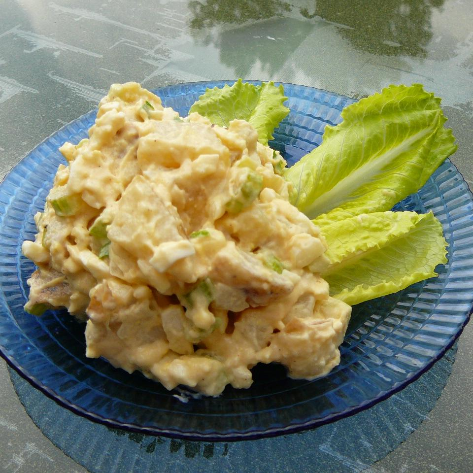

Summer Potato Salad

This is a lemony potato salad; it tastes a little lighter than a traditional potato salad.
Ingredients
- 5 cups peeled and cubed potatoes
- 3 eggs
- ⅓ cup lemon juice
- ¼ cup vegetable oil
- 2 teaspoons white sugar
- 1 ½ teaspoons seasoning salt
- 1 ½ teaspoons Worcestershire sauce
- 1 teaspoon ground mustard
- ¼ teaspoon ground black pepper
- ½ cup mayonnaise
- ¼ cup chopped green onions
- ⅓ cup chopped celery
- 3 tablespoons chopped fresh parsley
Steps
- Bring a large pot of salted water to a boil.
Add potatoes; cook until tender but still firm,
about 15 minutes. Drain, and transfer to a large bowl.
- Place eggs in a saucepan, and cover completely with cold water.
Bring water to a boil. Cover, remove from heat,
and let eggs stand in hot water for 10 to 12 minutes.
Remove from hot water, and cool. Peel, chop, and add to potatoes.
- In a small bowl, combine lemon juice, oil, sugar, seasoned salt,
Worcestershire sauce, mustard powder and black pepper; mix well.
Blend in mayonnaise. Pour lemon dressing over potatoes,
and stir to coat.
- Mix in green onions, celery, and parsley.
Refrigerate for at least 2 hours before serving.